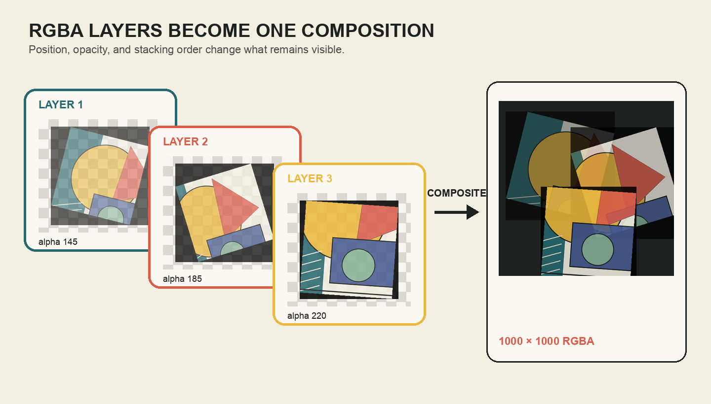
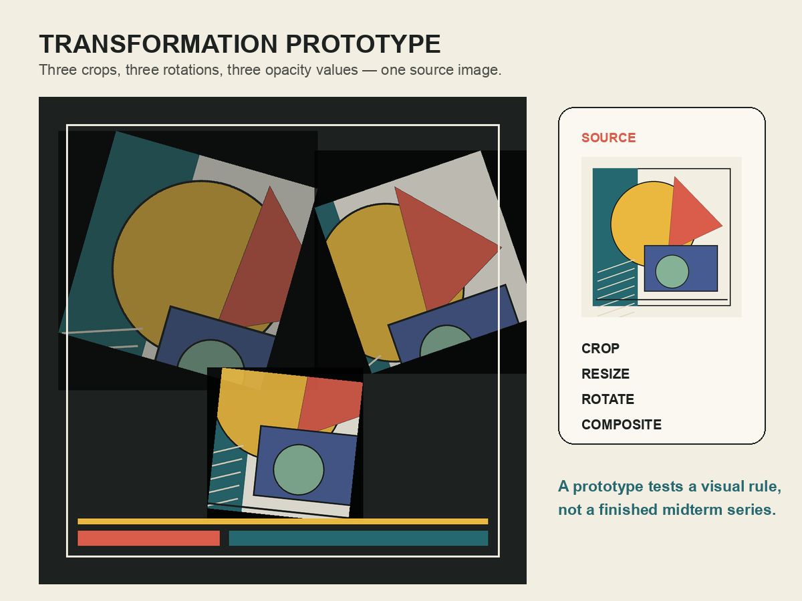

보이는 픽셀과 가려지는 픽셀의 관계를 설계하기
오늘의 학습 목표
- RGB와 RGBA의 차이를 설명하고 알파 값 0과 255의 상태를 구분할 수 있습니다.
- 캔버스와 레이어가 같은 좌표계를 사용하며 위치가 왼쪽 위 좌표로 정해진다는 것을 설명할 수 있습니다.
alpha_composite()에서 캔버스, 레이어,dest의 역할을 말로 풀어 읽을 수 있습니다.- 코드의 실행 순서가 레이어의 앞뒤 관계와 최종 결과를 바꾸는 이유를 설명할 수 있습니다.
- 외부 이미지를 사용하기 전에 허용 범위를 확인하고 제목·창작자·원본 주소·라이선스·변형 내용을 기록할 수 있습니다.
- 3교시 미션의 고정 조건과 자신이 선택할 매개변수를 구분할 수 있습니다.
- 0-5 min변형 회상
1교시의 자르기·크기 변경·회전을 레이어 준비와 연결합니다.
- 5-15 minRGB와 RGBA
네 번째 값인 알파가 픽셀의 가시성을 어떻게 바꾸는지 읽습니다.
- 15-27 min캔버스와 좌표
레이어의 크기, 위치, 경계 밖에서 잘리는 부분을 계산합니다.
- 27-38 min레이어 합성
alpha_composite와 실행 순서로 앞뒤 관계를 설계합니다.
- 38-44 min전체 구성 읽기
세 레이어가 하나의 프로토타입이 되는 파이프라인을 추적합니다.
- 44-50 min출처와 미션 계약
책임 있는 이미지 이용과 3교시 완료 조건을 고정합니다.
수업 운영: 기본 50분과 확장 60분
기본 50분에서는 알파, 좌표, 레이어 순서, 출처 기록, 3교시 조건까지 진행합니다. 진행이 빠른 경우에만 50-60분 확장에서 같은 레이어의 순서와 투명도만 바꾼 세 결과를 비교합니다. 새로운 명령보다 이미 배운 값이 결과에 미치는 영향을 깊이 확인합니다.
합성 코드를 처음 보는 학생을 위한 세 질문
- 바탕은 무엇인가? 가장 먼저 만들어진 큰 이미지가 캔버스입니다.
- 무엇을 올리는가? 자르기와 크기 변경, 회전을 마친 작은 이미지가 레이어입니다.
- 어디에 올리는가?
dest=(x, y)는 레이어 왼쪽 위 모서리가 놓일 캔버스 좌표입니다.
0-5분 · 변형 결과를 레이어로 다시 보기
1교시에는 한 원본에서 서로 다른 영역을 자르고, 크기와 방향을 바꿨습니다. 각 결과를 별도의 완성품으로 저장할 수도 있지만, 이번 시간에는 더 큰 화면 위에 올릴 레이어로 사용합니다. 레이어는 투명 필름처럼 생각할 수 있습니다. 필름이 완전히 투명한 부분에서는 아래 화면이 보이고, 색이 있는 부분에서는 위 레이어와 아래 화면이 함께 계산됩니다.

가장 앞에 있는 레이어 찾기
도해의 최종 화면에서 다른 형태를 가장 많이 가리고 있는 레이어를 찾습니다. 그 레이어의 알파 값과 합성 순서를 함께 확인합니다.
관찰 결과 확인
세 번째 레이어는 가장 마지막에 합성되어 앞쪽에 놓입니다. 알파 값도 220으로 세 레이어 가운데 가장 높아 비교적 선명하게 보입니다. 다만 “알파가 높다”와 “가장 앞에 있다”는 서로 다른 조건입니다.
5-15분 · RGB와 RGBA의 네 번째 값 읽기
RGB는 빨강(Red), 초록(Green), 파랑(Blue)의 세 값을 사용해 색을 표현합니다. RGBA는 여기에 알파(Alpha)를 더해 픽셀이 얼마나 보이는지를 함께 기록합니다. Pillow의 8비트 RGBA 이미지에서는 각 값이 0부터 255 사이의 정수입니다.
| RGBA 값 | 알파 상태 | 합성에서 보이는 결과 |
|---|---|---|
(38, 104, 111, 0) | 완전 투명 | 위 픽셀이 보이지 않고 아래 화면이 보임 |
(38, 104, 111, 128) | 부분 투명 | 위 색과 아래 색이 함께 보임 |
(38, 104, 111, 255) | 완전 불투명 | 위 픽셀이 아래 화면을 가림 |
알파 0은 검정색이라는 뜻이 아니라 완전 투명하다는 뜻이고, 알파 255는 흰색이라는 뜻이 아니라 완전 불투명하다는 뜻입니다. 앞의 RGB 세 값이 색을 정하고 네 번째 알파가 가시성을 정합니다.
rgba_image = source_image.convert("RGBA")
layer = rgba_image.copy()
layer.putalpha(180)putalpha(180)은 이 레이어의 모든 픽셀에 같은 알파 값을 적용합니다. 이미지 내부에 이미 다양한 투명도가 있었다면 하나의 값으로 교체될 수 있으므로, 이번 실습처럼 전체 레이어의 농도를 의도적으로 통일할 때 사용합니다.
3 channels
색의 빨강·초록·파랑 성분을 기록합니다. 투명도 채널은 없습니다.
4 channels
색의 세 성분과 알파를 함께 기록해 레이어 합성에 사용할 수 있습니다.
확인: 알파 128은 정확히 어떤 색인가?
알파 값만으로는 색을 정할 수 없습니다. RGB 세 값이 색을 정하고 알파 128은 그 색이 부분적으로 보이는 상태를 뜻합니다. 아래에 놓인 색에 따라 화면에서 보이는 최종 색도 달라집니다.
확인: PNG의 체크무늬도 이미지에 저장되는가?
일반적인 이미지 편집 프로그램의 체크무늬는 투명 영역을 알아보기 위한 화면 표시이며 PNG 픽셀에 포함되지 않습니다. 수업 도해에서는 투명함을 눈으로 설명하기 위해 체크무늬를 그려 넣었습니다.
15-27분 · 캔버스와 레이어를 같은 좌표계에 놓기
캔버스는 최종 결과의 전체 크기를 정하는 바탕 이미지입니다. 레이어는 캔버스 위에 놓을 더 작은 RGBA 이미지입니다. 둘은 같은 좌표계를 사용하며 왼쪽 위가 (0, 0)입니다. x는 오른쪽으로, y는 아래쪽으로 커집니다.
canvas = Image.new("RGBA", (1000, 1000), (29, 33, 31, 255))
x = 120
y = 240
position = (x, y)position = (120, 240)은 레이어 중심이 아니라 레이어의 왼쪽 위 모서리를 캔버스 x = 120, y = 240에 놓는다는 뜻입니다. 레이어 크기가 300 × 200이라면 오른쪽 아래 경계는 (420, 440)이 됩니다.
| dest 좌표 | 레이어 범위 | 예상 결과 |
|---|---|---|
(0, 0) | x 0~300, y 0~200 | 왼쪽 위에 완전히 보임 |
(350, 400) | x 350~650, y 400~600 | 중앙 부근에 완전히 보임 |
(850, 900) | x 850~1150, y 900~1100 | 오른쪽과 아래 일부가 캔버스 밖에서 잘림 |
레이어를 반드시 캔버스 안에만 놓아야 하는 것은 아닙니다. 화면 밖으로 일부를 밀어내면 잘린 구도를 만들 수 있습니다. 그러나 3교시 자동 검사는 초보자가 실수로 결과를 잃는 일을 막기 위해 세 레이어가 캔버스 안에 들어오는 위치를 요구합니다.
확인: 260 × 260 레이어를 (700, 720)에 놓으면 완전히 보이는가?
보입니다. 오른쪽 경계는 700 + 260 = 960, 아래 경계는 720 + 260 = 980이므로 1000 × 1000 캔버스 안에 들어옵니다. 회전 후 실제 레이어 크기가 커졌다면 layer.size로 다시 계산해야 합니다.
27-38분 · alpha_composite()와 레이어 순서
Pillow의 인스턴스 메서드 alpha_composite()는 RGBA 캔버스 위에 RGBA 레이어를 알파 값에 따라 합성합니다. 이번 수업에서는 다음 한 줄을 같은 문장 구조로 반복해서 읽습니다.
canvas.alpha_composite(layer, dest=(x, y))“canvas 위에 layer를 올리되, 레이어의 왼쪽 위를 dest=(x, y)에 맞추어 알파 합성한다”라고 읽습니다. 캔버스와 레이어는 모두 RGBA 모드여야 하며, 위치를 생략하면 왼쪽 위 (0, 0)을 기준으로 합성됩니다.
canvas.alpha_composite(layer_1, dest=(40, 70))
canvas.alpha_composite(layer_2, dest=(565, 110))
canvas.alpha_composite(layer_3, dest=(345, 555))코드는 위에서 아래로 실행됩니다. 따라서 layer_1이 먼저 놓이고, layer_2가 그 위에, layer_3가 가장 마지막에 놓입니다. 같은 위치와 알파 값을 사용해도 레이어 순서를 바꾸면 서로 가리는 부분이 달라져 최종 결과가 달라집니다.
| 바꾸는 것 | 코드의 위치 | 화면에서 달라지는 것 |
|---|---|---|
| 투명도 | putalpha(alpha) | 아래 레이어가 비치는 정도 |
| 위치 | dest=(x, y) | 레이어가 놓이는 영역과 겹침 |
| 순서 | alpha_composite() 실행 순서 | 무엇이 앞에 보이고 무엇이 가려지는가 |
공식 사례: 조각 사이의 관계가 의미를 만든다
MoMA의 한나 회흐 공식 페이지는 그가 대중매체의 이미지와 텍스트를 재결합해 사회와 문화의 관습을 비판했다고 설명합니다. 여기서 중요한 것은 조각 하나의 내용만이 아닙니다. 어떤 이미지를 더 크게 놓았는지, 무엇이 무엇을 가리는지, 서로 다른 출처의 조각이 어떤 충돌을 만드는지가 전체 의미에 참여합니다.
MoMA: The Photomontages of Hannah Höch ↗
공식 페이지에서 실제 작품을 볼 때 “무엇을 사용했는가?”에 이어 “어떤 크기와 위치, 방향, 겹침을 선택했는가?”를 관찰합니다. 코드의 매개변수는 이러한 구성 선택을 기록하는 방법입니다.
확인: layer_1을 가장 앞에 보이게 하려면?
같은 캔버스에 레이어를 순서대로 합성한다면 layer_1의 alpha_composite() 줄을 가장 마지막에 실행합니다. 알파 값만 높이는 것은 더 선명하게 보이게 할 수 있지만 앞뒤 실행 순서를 바꾸는 것과 같지 않습니다.
38-44분 · 세 레이어가 프로토타입이 되는 흐름
합성 과정은 복잡한 한 줄이 아니라 이미 배운 단계를 반복하는 구조입니다. 원본을 한 번 열고, 각 레이어에 대해 복사·자르기·크기 변경·회전·알파 적용을 실행한 뒤 캔버스에 올립니다.
canvas = Image.new("RGBA", (1000, 1000), (29, 33, 31, 255))
layer_1 = make_layer(source_image, crop_box_1, (430, 430), -16, 150)
layer_2 = make_layer(source_image, crop_box_2, (360, 360), 19, 190)
layer_3 = make_layer(source_image, crop_box_3, (290, 290), -6, 225)
canvas.alpha_composite(layer_1, dest=(40, 70))
canvas.alpha_composite(layer_2, dest=(565, 110))
canvas.alpha_composite(layer_3, dest=(345, 555))
canvas.save("week07_20260000_김민지.png")make_layer()는 6주차에 배운 함수의 장점을 다시 사용합니다. 자르기와 크기 변경, 회전, 알파 적용이라는 반복 작업을 한 이름으로 묶고, 서로 다른 값만 인자로 전달합니다. 3교시 노트북에는 이 함수가 준비되어 있으므로 학생은 함수 내부를 고치지 않고 선택 값에 집중합니다.

확인: 세 레이어가 같은 함수에서 나와도 다른 이유는?
함수의 규칙은 같지만 crop_box, 목표 크기, 각도, 알파, 위치라는 입력값이 다르기 때문입니다. 6주차에서 같은 생성 함수에 다른 매개변수를 넣어 변주를 만든 원리와 같습니다.
44-50분 · 이미지의 허용 범위와 변형 기록하기
이미지를 기술적으로 불러올 수 있다는 사실이 곧 자유롭게 사용할 수 있다는 뜻은 아닙니다. 자신의 6주차 결과물이나 수업용 대체 이미지를 사용하면 이번 실습의 출발이 단순합니다. 외부 이미지를 선택한다면 먼저 제공 페이지에서 재이용과 변형이 허용되는지 확인해야 합니다.
Creative Commons는 출처 표시의 실무적 기준으로 TASL을 안내합니다. 이는 Title, Author, Source, License의 첫 글자입니다. 이번 수업은 여기에 변형 내용을 더해 다음 다섯 항목을 노트북에 남깁니다.
| 항목 | 기록할 내용 | 수업용 대체 이미지 예시 |
|---|---|---|
| 제목 | 원본 작품 또는 파일의 제목 | Week 07 Source Poster |
| 창작자 | 원본을 만든 사람 또는 기관 | Course-provided asset |
| 원본 주소 | 원본을 다시 확인할 수 있는 URL 또는 자신의 파일 표기 | Bundled in the Week 07 notebook |
| 라이선스 | 표시된 이용 조건 또는 자신이 만든 자료라는 근거 | Course use / provided asset |
| 변형 내용 | 자르기, 크기 변경, 회전, 투명도, 합성처럼 실제로 바꾼 내용 | Cropped, resized, rotated, opacity adjusted, composited |
“인터넷에서 찾음”은 출처도 라이선스도 아니다
검색 결과 화면은 원본 페이지가 아닙니다. 이미지가 실제로 게시된 페이지로 이동해 창작자와 이용 조건을 확인합니다. 변형을 허용하지 않는 조건이 표시되어 있다면 이번 합성 실습의 외부 원본으로 선택하지 않습니다. 이 수업 안내는 법률 자문이 아니라 출처를 추적하고 이용 조건을 확인하는 기본 작업 절차입니다.
확인: Public Domain 또는 CC0 자료도 출처를 적어야 하는가?
법적 의무가 동일하지 않을 수 있지만, Creative Commons는 원본을 다시 찾고 제공 기관의 기여를 알 수 있도록 가능한 범위에서 제목·창작자·출처 등의 정보를 남기는 것을 권장합니다. 수업에서는 학습 과정의 추적을 위해 다섯 항목을 모두 기록합니다.
3교시 고정 미션 계약
3교시는 자유 주제 탐색 시간이 아니라 다음 조건을 충족하는 목표 달성형 개인 실습입니다. 변형 레이어 세 개를 1000 × 1000 RGBA 캔버스에 합성하며, 디자인의 미적 취향은 자동 검사하지 않습니다. 아래 기능 조건을 만족하고 두 파일을 제출하면 즉시 귀가합니다.
- 원본 선택자신의 6주차 PNG 또는 노트북의 수업용 대체 이미지를 사용합니다.
- 출처 기록제목, 창작자, 원본 주소, 라이선스, 변형 내용을 모두 작성합니다.
- 캔버스최종 결과를 1000 × 1000 RGBA 이미지로 만듭니다.
- 자르기원본 전체보다 작은 유효한 crop_box를 직접 선택합니다.
- 변형 레이어자르기·크기 변경·회전을 적용한 레이어를 세 개 이상 만듭니다.
- 방향 변화음수 각도와 양수 각도를 모두 사용해 서로 다른 방향을 만듭니다.
- 투명도와 위치서로 다른 알파 값과 위치를 사용하고 세 레이어를 캔버스 안에 놓습니다.
- 결과 저장
week07_학번_이름.png형식으로 저장합니다. - 검증과 제출새 세션 전체 실행의 자동 검사 PASS 후
.ipynb와.png를 제출합니다.
3교시 편집 경계
학생이 수정하는 값은 제출 정보, 출처 기록, crop_box, 세 각도, 세 알파 값, 세 위치입니다. 캔버스 크기, 레이어 목표 크기, make_layer() 함수, 합성 반복, 저장, FINAL CHECK는 준비된 상태로 사용합니다.
3교시 시작 전에 세 값을 종이에 정하기
음수·0 근처·양수로 구분되는 세 회전 각도, 서로 다른 세 알파 값, 겹치지만 캔버스 안에 들어오는 세 위치를 적습니다. 실제 노트북에서 이미지를 본 뒤 수정할 수 있습니다.
수업 후 개별 복습
1. RGB 이미지에 alpha_composite를 바로 사용하지 않는 이유는?
알파 합성에는 투명도 정보가 필요하므로 캔버스와 레이어를 RGBA처럼 알파 채널이 있는 모드로 통일해야 합니다. convert("RGBA")로 모드를 명시하면 입력 파일의 차이도 줄일 수 있습니다.
2. dest=(300, 400)은 레이어의 어느 지점을 뜻하는가?
레이어 왼쪽 위 모서리를 캔버스의 x = 300, y = 400에 맞춘다는 뜻입니다. 레이어 중심 좌표가 아닙니다.
3. 레이어 순서와 알파 값은 같은 역할인가?
아닙니다. 순서는 무엇이 앞과 뒤에 놓이는지를 정하고, 알파는 각 픽셀이 아래 화면을 얼마나 보이게 하는지 정합니다. 두 조건이 함께 최종 결과를 만듭니다.
4. 외부 이미지의 원본 주소만 적으면 충분한가?
아닙니다. 제목, 창작자, 원본 주소, 라이선스를 함께 기록하고, 무엇을 어떻게 바꾸었는지도 남깁니다. 원본 페이지에서 이용 조건을 먼저 확인해야 합니다.
50-60분 · 순서와 투명도만 바꾸어 세 결과 비교하기
확장 활동에서는 자르기, 크기, 위치를 고정합니다. 레이어 순서와 알파 값만 바꾸어 무엇이 결과 차이를 만들었는지 분리해 관찰합니다.
| 시간 | 활동 | 남겨야 할 결과 |
|---|---|---|
| 50-52분 | A안의 합성 순서 1 → 2 → 3 확인 | 가장 앞에 보이는 레이어 |
| 52-55분 | B안의 순서를 3 → 2 → 1로 뒤집어 예측 | 가려지는 영역의 변화 |
| 55-58분 | C안에서 알파 값을 140, 180, 220으로 재배치 | 겹친 색과 강조점의 변화 |
| 58-60분 | 중간 프로젝트에 발전시킬 안 선택 | 선택 근거 두 문장 |
2교시 핵심 문장
합성은 이미지를 단순히 겹치는 행동이 아니라, 각 레이어의 가시성·위치·순서를 정하고 그 선택의 출처를 함께 기록하는 과정입니다.
참고 자료
- Pillow 공식 문서: Image.alpha_composite()RGBA 이미지 합성, 위치 인자와 관련 이미지 메서드의 공식 설명
- Pillow 공식 핸드북: ModesRGB와 RGBA를 비롯한 이미지 모드의 공식 개념
- Creative Commons: Reusing CC-Licensed ContentTASL 출처 표시와 수정 사항 기록에 관한 공식 안내
- MoMA: Hannah Höch대중매체 이미지와 문자를 재결합한 작가의 공식 소개와 소장 작품
- MoMA: The Photomontages of Hannah Höch포토몽타주 작업을 다룬 미술관 공식 전시 기록